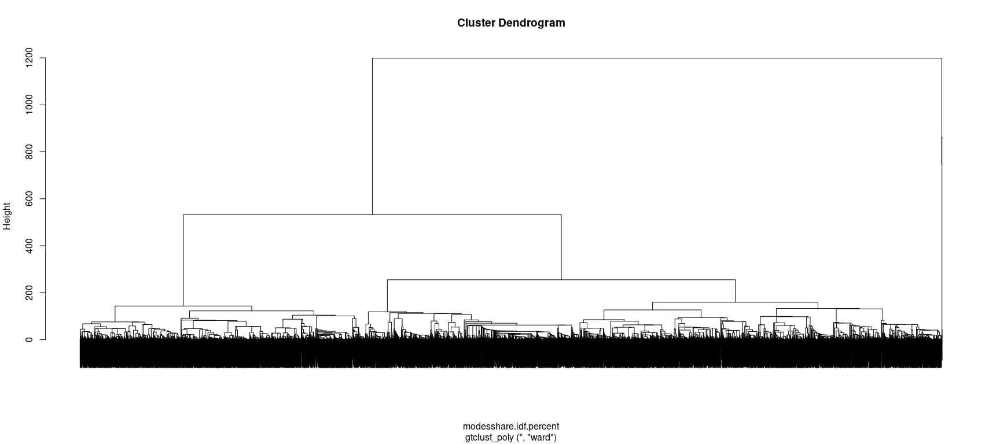
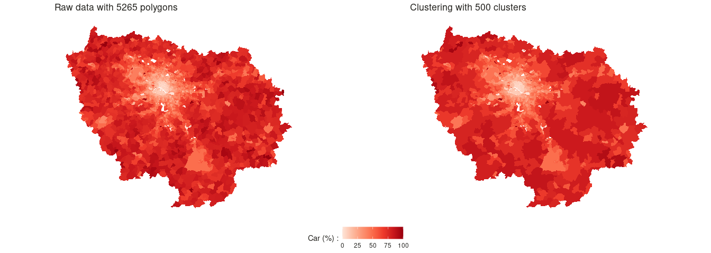
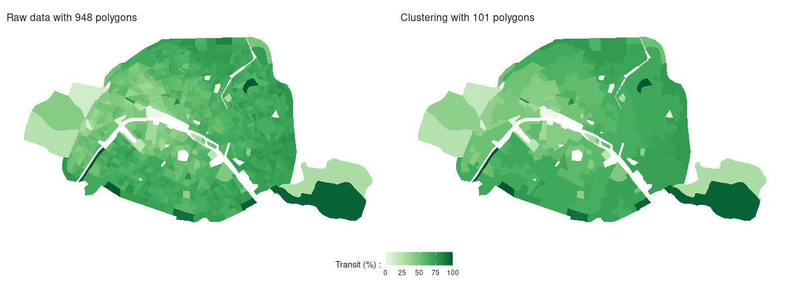

gtclust builds on top of ?gtclust_graph that enable the clustering with a hclust type approach but taking advantages of contiguity constraints induced by a graph. The contiguity naturally create a sparsely connected graph that can be leveraged to speed-up the calculations from to
and deal with more than 10^5 data-points in seconds. To ease, the contiguity graph creation process, gtclust offers several interfaces :
- gtclust_temp to cluster sequential data, the contiguity graph follow from the data ordering
- gtclust_poly to cluster data associated to geographical polygons, the contiguity graph follow from shared boundaries
- gtclust_delaunay to cluster data associated to geographical point, the contiguity graph is derived from the delaunay triangulation of the points
- gtclust_knn to cluster data associated to geographical point, the contiguity graph is derived from the symetrized knn graph of the geographical points
- gtclust_dist to cluster data associated to geographical point, the contiguity graph is derived from a threshold over distance the geographical points
Installation
You can install the development version of gtclust from GitHub with:
# install.packages("devtools")
devtools::install_github("comeetie/gtclust")Example
This is a basic example, we first prepare some spatial polygons data, here the results at the municipality level in one french department for the :
library(gtclust)
library(dplyr)
library(sf)
data("modesshare.idf")
modesshare.idf <- modesshare.idf |>
rowwise(CODE_IRIS) |>
mutate(total = sum(c_across(nodep:tcom)))
modesshare.idf.percent = modesshare.idf |>
filter(total!=0) |>
transmute(across(nodep:tcom,\(v){v/total}))
Do the clustering and use the classical function from ?hclust (?plot.hclust and ?cutree):
hc=gtclust_poly(modesshare.idf.percent,method="ward")
#> Warning: Some features were not numeric and have been removed from the
#> clustering.
#> Warning: Some regions were isolated. The hierarchy was automatically completed
#> to reach one cluster.
plot(hc,labels=FALSE)
cutree(hc,k=30) |> head(20)
#> 1 2 3 4 5 6 7 8 9 10 11 12 13 14 15 16 17 18 19 20
#> 1 1 2 3 4 5 6 4 7 3 8 9 1 1 10 11 4 8 12 4
You may also use the ?geocutree function which build directly a spatial data.frame with the clustering results:
modesshare_agg = geocutree(hc,k=500)
theme_map <- function(...) {
theme_minimal() +
theme(
text = element_text( color = "#22211d"),
axis.line = element_blank(),
axis.text.x = element_blank(),
axis.text.y = element_blank(),
axis.ticks = element_blank(),
axis.title.x = element_blank(),
axis.title.y = element_blank(),
panel.grid.major = element_line(color = "#ffffff", size = 0.2),
panel.grid.minor = element_blank(),
plot.background = element_rect(fill = "#ffffff", color = NA),
panel.background = element_rect(fill = "#ffffff", color = NA),
legend.background = element_rect(fill = "#ffffff", color = NA),
panel.border = element_blank(),
...
)
}
library(ggplot2)
library(ggpubr)
magg = ggplot(modesshare_agg)+
geom_sf(aes(fill=voiture*100),size=0)+
theme_map()+scale_fill_distiller("Car (%) :",palette = "Reds",direction = 1,limits=c(0,100))+
ggtitle(paste0("Clustering with ",nrow(modesshare_agg)," clusters"))
mraw = ggplot(modesshare.idf.percent)+
geom_sf(aes(fill=voiture*100),size=0)+
theme_map()+
scale_fill_distiller("Car (%) :",palette = "Reds",direction = 1,limits=c(0,100))+
ggtitle(paste0("Raw data with ",nrow(modesshare.idf)," polygons"))
ggarrange(mraw,magg,nrow = 1,common.legend = TRUE,legend="bottom")
modesshare.paris = modesshare.idf.percent|>filter(substr(CODE_IRIS,1,2)==75)
env_paris=st_union(modesshare.paris) |> st_geometry()
modesshare_agg_paris = st_intersection(modesshare_agg,env_paris)
#> Warning: attribute variables are assumed to be spatially constant throughout all
#> geometries
magg_paris = ggplot(modesshare_agg_paris)+
geom_sf(aes(fill=tcom*100),size=0)+
theme_map()+
scale_fill_distiller("Transit (%) :",palette = "Greens",direction = 1,limits=c(0,100))+
ggtitle(paste0("Clustering with ",nrow(modesshare_agg_paris)," polygons"))
mraw_paris = ggplot(modesshare.paris)+
geom_sf(aes(fill=tcom*100),size=0)+
theme_map()+
scale_fill_distiller("Transit (%) :",palette = "Greens",direction = 1,limits=c(0,100))+
ggtitle(paste0("Raw data with ",nrow(modesshare.paris)," polygons"))
ggarrange(mraw_paris,magg_paris,nrow = 1,common.legend = TRUE,legend="bottom")